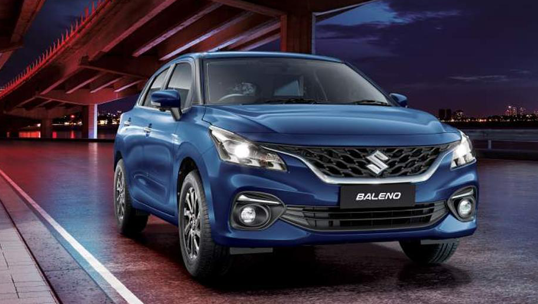
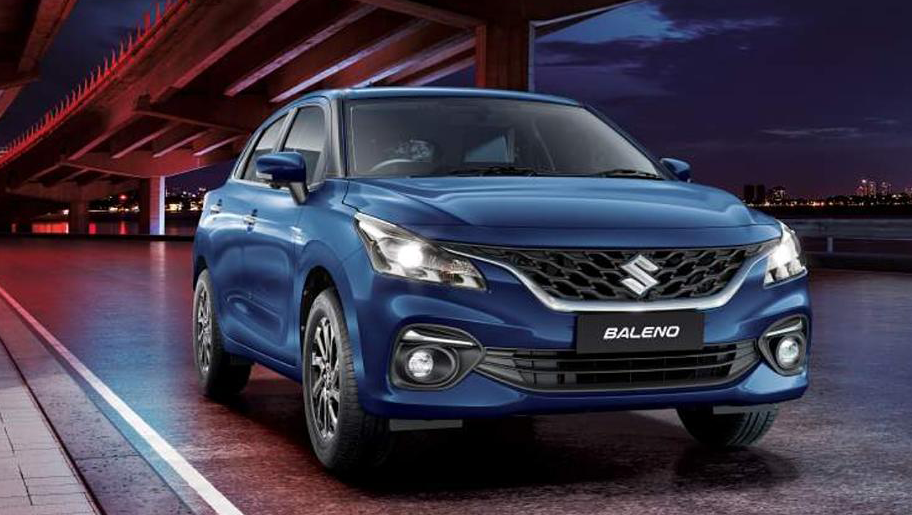

The Maruti Swift has 1 Petrol Engine and 1 CNG Engine on offer. The Petrol engine is 1197 cc while the CNG engine is 1197 cc . It is available with Manual & Automatic transmission.Depending upon the variant and fuel type the Swift has a mileage of 22.38 kmpl to 30.9 km/kg . The Swift is a 5 seater 4 cylinder car and has length of 3845mm, width of 1735 and a wheelbase of 2450.

The Tata Nexon has 1 Diesel Engine and 1 Petrol Engine on offer. The Diesel engine is 1497 cc while the Petrol engine is 1199 cc . It is available with Manual & Automatic transmission.Depending upon the variant and fuel type the Nexon has a mileage of 24.07 kmpl & Ground clearance of Nexon is 209. The Nexon is a 5 seater 4 cylinder car and has length of 3993, width of 1811 and a wheelbase of 2498.
 

The Maruti Baleno has 1 Petrol Engine and 1 CNG Engine on offer. The Petrol engine is 1197 cc while the CNG engine is 1197 cc . It is available with Manual & Automatic transmission.Depending upon the variant and fuel type the Baleno has a mileage of 22.35 kmpl to 30.61 km/kg . The Baleno is a 5 seater 4 cylinder car and has length of 3990mm, width of 1745 and a wheelbase of 2520.
The Toyota Fortuner has 1 Diesel Engine and 1 Petrol Engine on offer. The Diesel engine is 2755 cc while the Petrol engine is 2694 cc . It is available with Manual & Automatic transmission.Depending upon the variant and fuel type the Fortuner has a mileage of 10.0 kmpl . The Fortuner is a 7 seater 4 cylinder car and has length of 4795mm, width of 1855mm and a wheelbase of 2745mm.

The Mahindra Scorpio has 3 Diesel Engine on offer. The Diesel engine is 2523 cc and 2179 cc and 1997 cc . It is available with Manual & Automatic transmission.Depending upon the variant and fuel type the Scorpio has a mileage of 16.36 kmpl & Ground clearance of Scorpio is 180mm. The Scorpio is a 7 seater 4 cylinder car and has length of 4456mm, width of 1820mm and a wheelbase of 2680mm.

.webp)
The Diesel engine is 2184 cc and 1497 cc while the Petrol engine is 1997 cc . It is available with Automatic & Manual transmission.Depending upon the variant and fuel type the Thar has a mileage of 15.2 kmpl & Ground clearance of Thar is 226mm. The Thar is a 4 seater.
.webp)
The Maruti Vitara Brezza has 1 Petrol Engine on offer. The Petrol engine is 1462 cc . It is available with Manual & Automatic transmission.Depending upon the variant and fuel type the Vitara Brezza has a mileage of 17.03 to 18.76 kmpl . The Vitara Brezza is a 5 seater 4 cylinder car and has length of 3995mm, width of 1790mm and a wheelbase of 2500mm.

The Hyundai Creta has 1 Diesel Engine and 3 Petrol Engine on offer. The Diesel engine is 1493 cc while the Petrol engine is 1497 cc and 1498 cc and 1397 cc . It is available with Automatic & Manual transmission.Depending upon the variant and fuel type the Creta has a mileage of 16.8 kmpl . The Creta is a 5 seater 4 cylinder car and has length of 4300mm, width of 1790mm and a wheelbase of 2610mm.
The Maruti Wagon R has 1 Petrol Engine and 1 CNG Engine on offer. The Petrol engine is 1197 cc while the CNG engine is 998 cc . It is available with Manual & Automatic transmission.Depending upon the variant and fuel type the Wagon R has a mileage of 23.56 kmpl to 34.05 km/kg . The Wagon R is a 5 seater 4 cylinder car and has length of 3655mm, width of 1620mm and a wheelbase of 2435.
The Mercedes-Benz S-Class has 1 Diesel Engine and 1 Petrol Engine on offer. The Diesel engine is 2925 cc while the Petrol engine is 2999 cc . It is available with Automatic transmission.Depending upon the variant and fuel type the S-Class has a mileage of 13.38 kmpl . The S-Class is a 5 seater 6 cylinder car and has length of 5289mm, width of 2109mm and a wheelbase of 3216mm.
The Land Rover Range Rover has 1 Diesel Engine and 5 Petrol Engine on offer. The Diesel engine is 2997 cc while the Petrol engine is 2998 cc and 2996 cc and 4395 cc and 4367 cc and 2997 cc . It is available with Automatic transmission.Depending upon the variant and fuel type the Range Rover has a mileage of 14.01 kmpl . The Range Rover is a 7 seater 8 cylinder car and has length of 5052mm, width of 2209mm and a wheelbase of 2997mm.
.webp)
The BMW X7 has 1 Diesel Engine and 1 Petrol Engine on offer. The Diesel engine is 2993 cc while the Petrol engine is 2998 cc . It is available with Automatic transmission.Depending upon the variant and fuel type the X7 has a mileage of 11.29 to 14.31 kmpl . The X7 is a 6 seater 6 cylinder car and has length of 5181mm, width of 2218mm and a wheelbase of 3105mm.